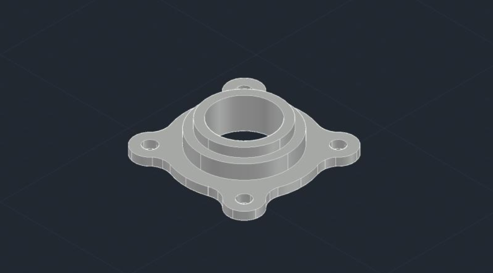

To get better at mechanical design and improve my CAD skills, I decided to model a 4-bolt bearing housing using AutoCAD. It was a really useful exercise, especially because these types of bearing units are commonly used in machines to support rotating shafts — where getting the alignment and precision right is super important.
While working on it, I paid close attention to things like the geometry, the layout of the mounting holes, and making sure the overall design was symmetrical. All of that plays a key role in making sure the part functions properly and can actually be manufactured without issues.
This project gave me a better understanding of how real components are designed — not just for how they work, but also for how easily they can be made. It's definitely helped me see the practical side of CAD modeling and mechanical design a lot more clearly.
